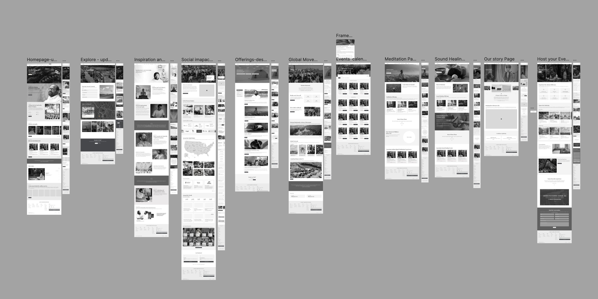
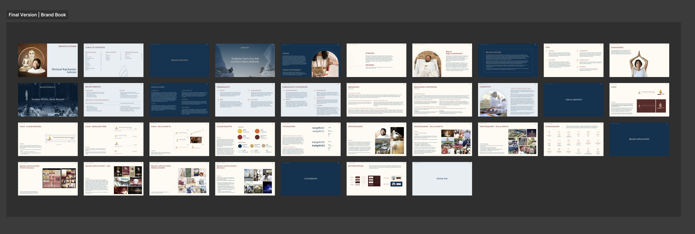

Although the site hasn't launched yet, the project has defined the first official digital presence for the U.S. Ashram, established a cohesive brand experience for a U.S. audience, and created reusable patterns that will support long-term site growth.
SRA Website
A 16-page website for Shrimad Rajchandra Ashram, USA, an upcoming wellness sanctuary in the Poconos designed to offer a space for reflection, learning, community, and inner growth. Designed from scratch as Lead Designer across strategy, IA, visual design, content collaboration, and development QA.
Role
Lead Designer
Scope
16 pages
Status
In development
Year
2026

Impact so far
16
Pages across storytelling, visitor planning, and programs
6
Distinct audience groups designed for simultaneously
First digital presence
For the U.S. Ashram, built entirely from scratch
The challenge
Designing a website for a place that was still coming to life.
The Ashram is a new physical destination, no existing website, no established digital presence. The organization needed a site that could introduce the Ashram to first-time visitors, communicate its history and offerings, support visitor planning, and create a scalable foundation for future growth, all before the space had physically opened.
The project had to balance multiple needs at once: introduce a new wellness sanctuary, honor the heritage of the mother Ashram in India, create a brand experience relevant to a U.S. audience, support both first-time visitors and existing members, and launch 16 pages from scratch.
The website could not simply be informational. It needed to feel immersive, welcoming, and emotionally connected to the physical space.
"The design needed to feel like an invitation. When users landed on the site, we wanted them to feel: I want to come here."
My role
Leading design from strategy through QA.
I served as Lead Designer throughout the project. While there was a broader team involved, most of the design direction and execution fell under my ownership. I was responsible for co-owning the information architecture with the content team, creating wireframes for key pages, leading the visual design direction, and translating content into clear, engaging page experiences.
I also worked directly with the development agency, explaining design intent, reviewing the implemented site, and providing ongoing QA feedback across button states, font styling, spacing, responsive behavior, and layout edge cases. A major part of my role was making sure content and design evolved together, since the two could not be separated on a project this storytelling-heavy.

Audience
Six distinct groups. One coherent experience.
The website was designed for several key audience groups, each arriving with different needs, motivations, and levels of familiarity with the Ashram. The goal was for every visitor to land on the site and feel drawn to the space, to see it as beautiful, meaningful, welcoming, and worth visiting.
First-time visitors discovering the Ashram
Spiritual seekers looking for reflection or growth
Current members of the organization
Retreat attendees and program participants
Visitors interested in yoga, meditation & sound healing
Visitors planning a trip to the Poconos location
The 16-page launch scope covers:
Homepage
Inspiration & Founder
Our Story
Explore the Space
Global Headquarters
Social Impact
Programs Calendar
Host Your Event
Contact Us
Directions
Yoga
Meditation
Sound Healing
Courses
UX approach
Storytelling as the core design strategy.
One of the biggest design decisions was making storytelling central to the experience. Rather than treating each page as a static information page, I designed the site to guide users through the Ashram's space, history, culture, and offerings in a more immersive way, through page structure, section pacing, photography, quotes, audio moments, and a layered content hierarchy.
The goal was to help users feel like they were beginning to experience the Ashram before physically arriving.
01
Honor heritage, increase accessibility
The Ashram has deep roots connected to the mother organization in India. The design respected that heritage without feeling inaccessible to a U.S. audience, rooted, but approachable.
02
Make content-heavy pages digestible
Pages like Social Impact and Our Story needed to communicate history, philosophy, and impact without overwhelming users. Strong visual hierarchy, section pacing, and visual pauses made dense content feel scannable and emotionally engaging.
03
Build for scalability from day one
The site structure, page templates, and design patterns were created to support future content, programs, events, and visitor resources, because the first launch is only the beginning of a larger digital ecosystem.


Key design decisions
Three choices that shaped the experience.
01
Creating an immersive first impression
For the homepage and key storytelling pages, I designed for users to immediately feel the beauty and scale of the Ashram, using imagery, spacious layouts, and thoughtful pacing to create a sense of arrival. The goal was to make the user feel invited into the space.
02
Weaving quotes throughout the experience
Quotes from the spiritual guru became a key design element across the site, bringing the spiritual foundation into the experience in a subtle, meaningful way without over-explaining the philosophy. In some areas, quotes were paired with audio, creating a more immersive and sensory moment.
03
Designing program pages as individual experiences
Each offering (yoga, meditation, sound healing, courses) needed its own page, but also had to feel cohesive across the site. I approached these as part of a larger content system: each page explains the offering clearly while staying connected to the broader purpose of the sanctuary.

Collaboration
Content and design developed together.
I worked closely with the content team throughout the project because the two disciplines couldn't be separated. Together we worked through questions like: what does a first-time visitor need to understand first? Where does the story need more emotion? What should be shown visually instead of explained in text?
This content-design partnership was especially important for pages like Our Story, Social Impact, and Inspiration & Founder, pages where the experience only works when structure, visuals, and messaging are developed together.
Once the site moved into development, my focus shifted to protecting the overall experience rather than chasing pixel perfection. QA feedback covered button states, font styling, spacing, padding, responsive behavior, layout edge cases, and component consistency. This collaboration is ongoing as the site moves toward launch.

Reflections
What this project taught me.
Content design is UX
This project made clearer than any other that content strategy and UX are the same discipline. IA, copy decisions, and page layouts were inseparable. You couldn't design one without the other.
Designing for a vision, not a reality
With no photography and no open physical space, the design had to create belief in something that didn't yet exist. Every visual and content decision carried more weight than usual.
Leading across the full lifecycle
This was one of the first projects where I owned strategy, UX, visual design, content collaboration, and development QA simultaneously. It shaped how I think about what it means to lead design end-to-end.